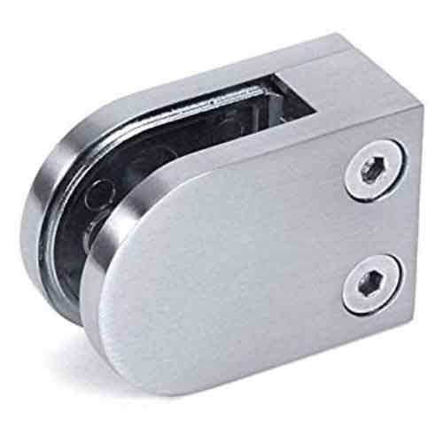

|  | Glass Clamps. The most popular method for providing a glazed balustrade, while at the same time keeping the outlook open and views beyond, visible. Glass Clamps are simple to install and are offered in either a square or radiused option, providing a glazed system between uprights. |
Available Materials: